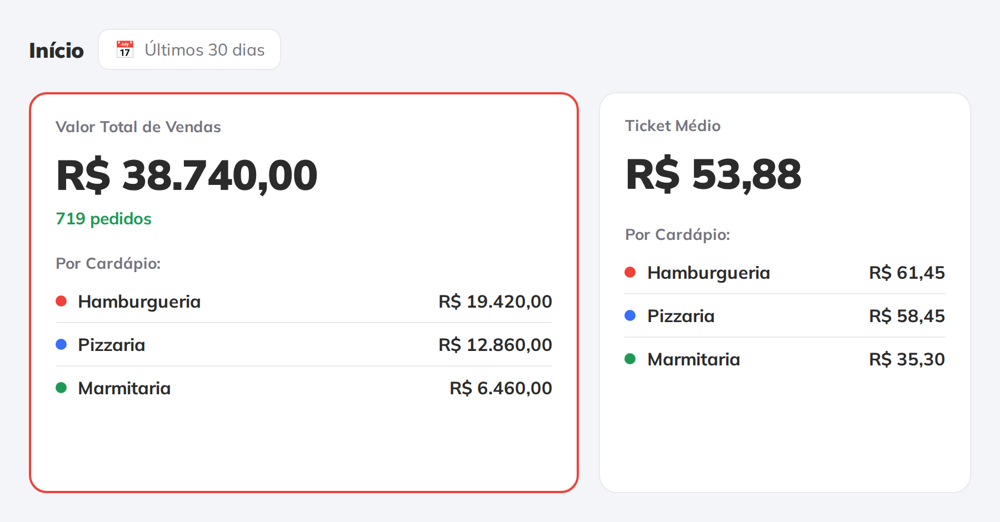

<!-- A capa NOMEIA o recurso, e o nome dele aqui e o proprio arranjo: varias
     marcas, um painel. Nao e "novidade" nenhuma — multicardapio existe no
     sistema, e a pilula diz o tema (`Dark Kitchen`), nao `Novidade`. Peca de
     funcao republicada com pilula de novidade queima com quem ja e cliente.

     A manchete-conceito da propria pagina ("Tudo que sua Dark Kitchen precisa
     para vender mais") e exatamente o vicio que a memoria proibe: nao diz o nome
     de nada.

     A imagem entra SEM moldura de aparelho, e e o recorte do cartao de vendas
     com a quebra `Por Cardapio`. O que a capa tem de provar sao os tres nomes de
     marca no mesmo cartao, e nome de marca dentro de notebook em 620 px nao se
     le. O notebook foi para o slide 7, onde a tela e atmosfera. -->
<div class="slide slide--capa">
  <div class="topo">
    <span class="logo"></span>
    <span class="contador">1 de 7</span>
  </div>

  <div class="pilha g24" style="margin-top: 40px; max-width: 900px">
    <span class="pilula">Dark Kitchen</span>
    <h1 class="titulo titulo--medio">
      Várias marcas<br>num painel <span class="destaque">só</span>
    </h1>
    <p class="subtitulo">
      Cada uma com o seu cardápio, os seus canais e o seu resultado.
    </p>
  </div>

  <div class="figura" style="margin-top: 58px; width: 940px">
    <div class="recorte">
      
    </div>
  </div>
</div>
